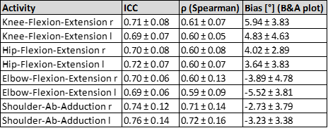

Was ist AngleUp?
AngleUp ist eine App für den Breiten- und Schulsport, mit der die Gelenkwinkel bei sportlichen Bewegungen gemessen werden. Beispielsweise kann das Abklappen des Handgelenks und die Kniebeuge beim Basketballwurf aufgezeichnet werden. Die Bewegungsanalyse dient der Trainingsunterstützung und Technikverbesserung durch qualitative Messwerte und visuelles Feedback.
Funktionen
Winkelmessung
Präzise Bestimmung von Gelenkwinkeln direkt aus Kurzvideos deiner Mediathek.
Zeitlupen-Analyse
Analysiere komplexe Bewegungsabläufe in Zeitlupe oder in Standbildern.
Videoexport
Exportiere Videos mit eingeblendeten Winkeln für Präsentationen.
Zeitverlauf
Visualisiere Bewegungen in übersichtlichen Diagrammen.
Excel Export
Exportiere Rohdaten für wissenschaftliche Analysen.
Einsatz in der Schule
AngleUp dient als digitales Methodenwerkzeug der Optimierung von Unterrichtssequenzen in vielen Dimensionen. Durch die gemeinsame visuelle Aufbereitung technischer Details fördern wir das kooperative Lernen und folgen dabei den Lehrvorgaben der Länder.
- check_circleZeitlupe, Messwerte und Standbilder ermöglichen objektive Bewegungsanalyse
- check_circleSichtbares Feedback von Details, die im normalen Bewegungsablauf kaum erkennbar sind
- check_circleKomplexe Bewegungen einfach verständlich machen
- check_circleEntwicklung konkreter Strategien zur eigenständigen Verbesserung der Bewegung
- check_circleVergleich mit Idealmodellen zur Technikverbesserung
- check_circleEntwicklung und Vergleich eigener Funktionsphasenmodelle
- check_circleUnterstützt individuelle Lernwege auf jedem Leistungsniveau
- check_circleEinsatz in kooperativen Lernformen
- check_circleAnalyse in Partner- oder Kleingruppenarbeit
- check_circleFörderung von Fachkompetenz und Fachsprache
- check_circleFörderung der Reflexionsfähigkeit
- check_circleFörderung der Sozialkompetenz durch die Formulierung und Annahme von konstruktivem Feedback
- check_circleObjektive Notengebung durch digitale Abgaben mit Messwerten
Wie genau sind die Messdaten?
Das Framework der App wurde in der Studie von Francia et al. (2024) mit dem etablierten Xsens System von Movella verglichen. Die Ergebnisse zeigen, dass der Algorithmus Bewegungsverläufe über die Zeit realitätsnah und zuverlässig abbildet.
R ≈ 0,7
Starke Korrelation
Gute Übereinstimmung mit den Sensordaten des Referenzsystems.
<6°
geringe Abweichung
Der mittlere Bias liegt zwischen 3°-6°.
Referenz:
[1] Francia, C., et al. (2024). Validation of a MediaPipe System for Markerless Motion Analysis During Virtual Reality Rehabilitation. In: De Paolis, L.T., Arpaia, P., Sacco, M. (eds) Extended Reality. XR Salento 2024. Lecture Notes in Computer Science, vol. 15029. Springer, Cham.
Zum Artikel open_in_new
Diagramm: Vergleich des Kniegelenkwinkels vom App-Framework mit dem Xsens-System bei einer Kniebeuge. Die Messung verdeutlicht die hohe Übereinstimmung beider Systeme (Francia et al. 2024).

Tabelle: Statistische Kennwerte bei der Validierung des App-Frameworks mit Xsens. (Francia et al. 2024)